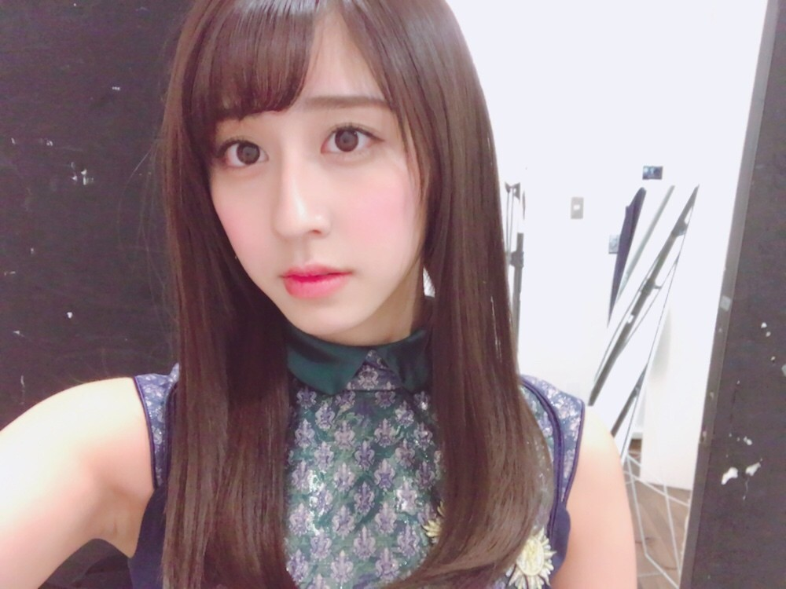

| 2017/04 16 Sun | 斎藤ちはる 写真展 |
ちはるーむへようこそ
今日のちはるーむでは撮り溜めていたグータッチを観ました。
今日はチャップリンデー。
20世紀最大の映画作家、喜劇俳優である
チャールズ・チャップリンの誕生日から。
作品を見たことはなくとも
チャップリンを知らない人は
いないっていうくらいに偉大な人。
その時代にとって新しいことをするって
勇気のいることだけど
新しいことをしなきゃ変わらないもんね。
そう思うと凄いな〜
髪の毛が短いの、まだ慣れません。
☺︎ChihaBoom☺︎
第２回目のこのコーナーは、
私の趣味であるカメラ、写真からです！！
ミラーレスカメラを持ってから
写真に対しての意識が変わった気がするし
より興味を持つようになりました。
どんな構図があるのかな、
どんな色合いが良いのかな、
どうやったらこんな素敵な写真が撮れるのかな、
って写真を見ながら考えたり
自分で模索する時間が好きです。
先日、カメラマンの
嶌村吉祥丸さんの写真展に行って来ました◎
ここ最近なかなか展示会等行けてなかったので
心がチャージされました。
今回の展示は全てフィルムカメラらしく、
普通の一眼レフの写真とは
違った風合いでとても素敵でした。
見ているだけで心が豊かになれるような
幸せな空間でした
数ある写真の中で
私が一番心奪われたのは、
湖に集まる鳥の写真でした。
キラキラした水面、
一羽だけ湖に入ろうとしている瞬間、
手前が暗いため余計に目立つ太陽光、
フィルムカメラならではの粒子感。
色々な要素から惹かれたのもありますが
何故かこの写真の前から
離れることが出来なかった。
惹きつけられる何かがありました。
写真を載せられないのは残念だけど
素晴らしい写真展だったということと
私が写真が大好きだということは
伝えられたかな...？
装苑やNYLON等雑誌で活躍なされている嶌村さん、
いつか一緒にお仕事が出来ますように！
------------------------------------------------♡
♬ ChihaMusic
「ホリディ」BUMP OF CHICKENさん
ゆったりとしたメロディー、
のんびりとした歌詞、
聴き心地が良すぎる。
誰もが思う事を歌にしてくれている。
共感できる曲ってなんか嬉しいよね。
"失敗しない 後悔しない人生がいいな
少し考えてみただけさ
有り得ないって解ってる"
この冒頭から惹かれる。
心に寄り添う歌。

ブンブンブン
おやすみ
斎藤ちはる